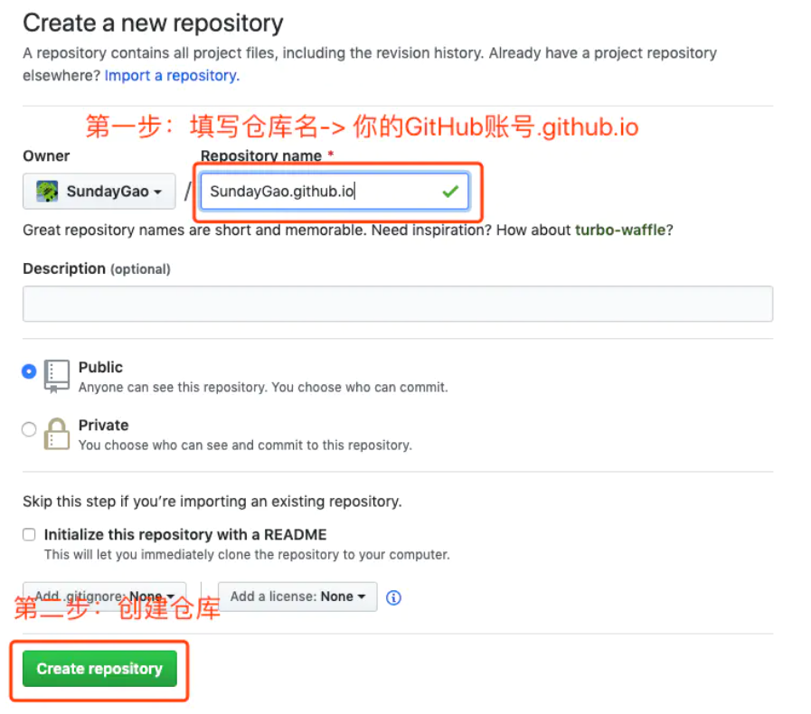

github.io是每个Github账号可以免费拥有的一个域名，这个域名上部署的页面，称之为Github Pages，用户有高度自主权去DIY自己的“个人网站”。
通常，用户会将其用来作为自己的博客网站，存放一些博客、收藏、简历等，业界比较成熟的个人博客网站模板是Hexo，它基于Node.js，能快速生成一套可运行成博客页面的代码，用户将自己的文章加入并配置好相关信息，然后编译，推送到github.io仓库中，Github会自动将页面部署到服务器。不仅如此，Hexo上提供丰富多样的模板主题，可供选择。
Github Pages + Hexo 搭建个人博客
Github Pages
创建Github Pages
配置好git和GitHub后，需要在GitHub上创建Github Pages服务

GitHub可以配置下SSH连接公钥
安装Hexo并初始化博客
###安装Hexo及验证
1 | $ npm install -g hexo-cli |
初始化项目
1 | $ hexo init {name} |
| hexo命令 | 简写 | 说明 |
|---|---|---|
| hexo clean | 清除缓存 | |
| hexo generate | hexo g | 编译 |
| hexo serve | hexo s | 本地运行 |
| hexo deploy | hexo d | 部署 |
| hexo new {blogName} | 新建博客（文件夹及md文件） |
hexo deply部署命令之前
额外安装一个支持 Git 的部署插件-hexo-deployer-git：
1 | $ npm install -S hexo-deployer-git |
_config.yml中配置部署地址

运行部署命令后https://{username}.github.io/可以访问个人博客
可以选择hexo博客主题_config.yml中的theme
git除了存储生成的静态页面，还要存放hexo开发代码
本地和发布分支
一个分支用来存放Hexo生成的网站原始的文件，另一个分支用来存放生成的静态网页
从hexo分支下载后的代码部署方式：
npm安装packge.json依赖到node_modules
1 | $ npm install |
hexo 编译
1 | $ hexo g |
hexo 部署到github page域名
1 | $ hexo d |
zhouxlt.github.io访问不了
ping域名，看到了ip
1 | $ ping zhouxlt.github.io |

以太网Internet4协议配置

监测网络中DNS服务器是否能正确实现域名解析

刷新DNS缓存

翻墙！！
一顿操作~~~结果是因为要翻墙~~~